I specialized in Architectural photography and spent years fine tuning my HDR, image capture, and lighting skills. Then one long winter day I pointed my camera at a glass ornament instead.
Before the glass
Before I made art, I was an architectural photographer. My job was to make a finished room look the way it feels to stand in it. I used a technique called HDR, which blends several exposures so that the brightest window and the darkest corner both keep their detail.
That work appeared in Architectural Digest, Fine Homebuilding, Green Building and other building-industry publications, brochures and websites.
One long winter day
One long winter day I tried the same technique on something very small. Instead of a room, I photographed light passing through handblown glass ornaments, from so close that the object itself disappeared.
What came back was a range of colour and light I had not seen before, full of abstract shapes and textures. No two frames were alike. Each one is one of a kind, and they became the foundation of my mixed media work.

How the pictures are made
The glass is blown by my friend Garth Mudge at Glassworks in Winthrop, Washington.
I turn a wide-angle lens around backwards and work about a thumb's width from the surface, careful not to bump the glass with the lens. For each finished image I take seven photographs, from light to dark, and combine them so the whole range of light and colour sits in one glowing picture.
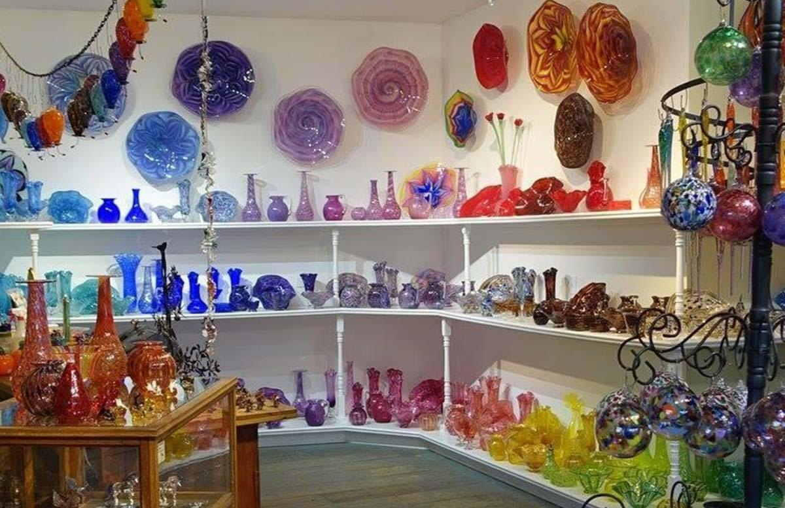
From rooms to walls
In 2012 I founded Artworks and The Art Drop Shop Gallery, to help people find art that suits the room it will live in. My first gallery show was that November. It went well, and that was the encouragement I needed to keep going.
Since then my work has hung in galleries, corporate offices, hotels, rental properties and private homes, and has appeared on Houzz and in Computer Graphics and Animations magazine.
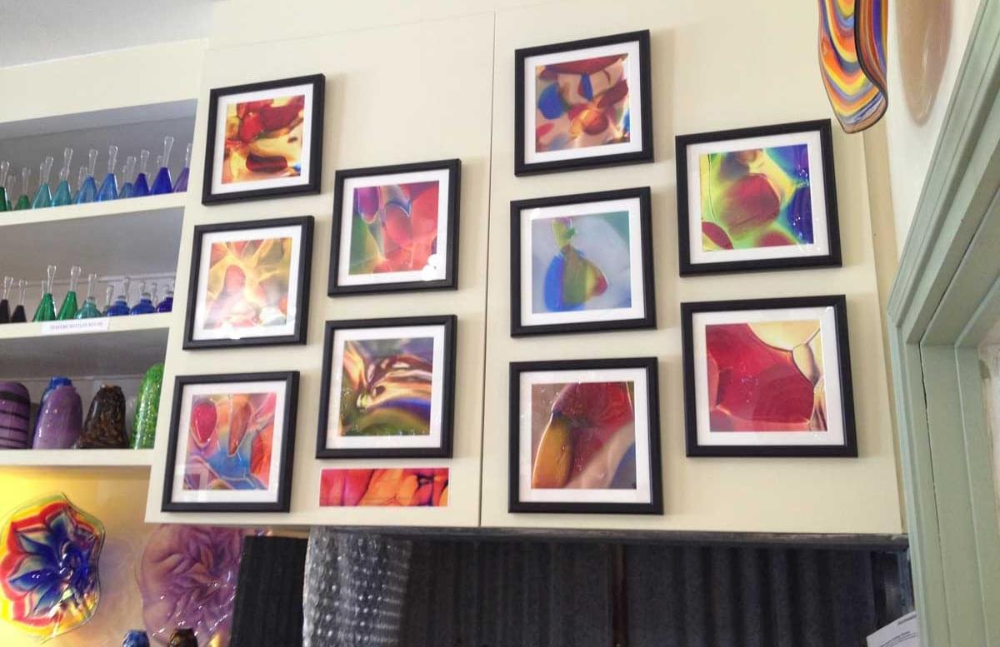
What I make now
Handblown glass up close, Pacific Northwest landscapes, and mixed media photo-paintings.
I think of the work as a fusion of light, spirituality and technology, inspired by what can and cannot be seen. The aim has not changed since my years photographing rooms: an image should complement the space it hangs in, and make it better.
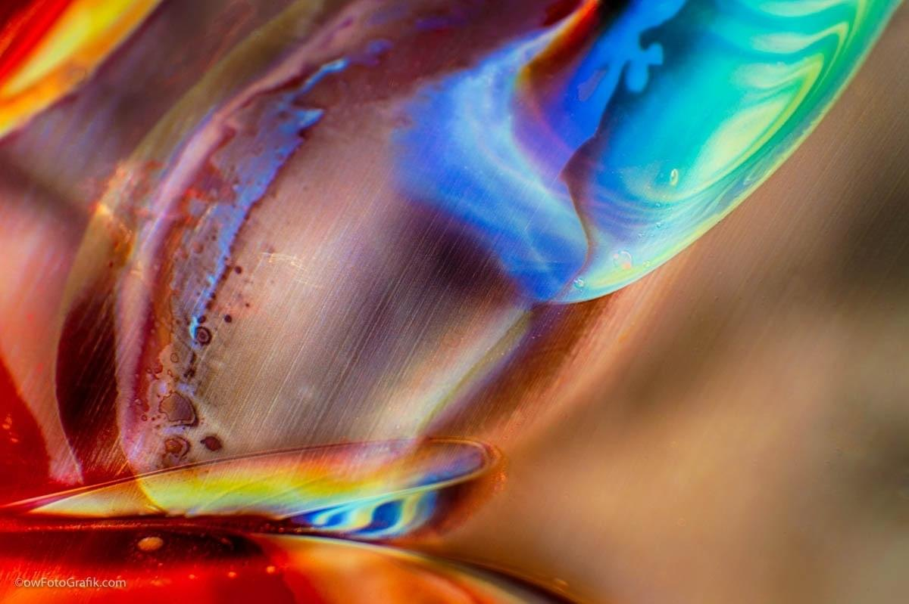
Handblown Glass Art + Macro Glass Photography
Handblown Glass Art
Macro glass photography starts with handblown glass art and the glassblower that inspired all of this art is Garth Mudge, from Glassworks in Winthrop Wa.
You can see for yourself just how amazing his creations are in these photos. You can also see the art that was created from these photos lining the walls of the shop. Garth is a great friend and when he saw how his art looked at another level he adopted almost 20 pieces and put them in his home, office and store.
Macro Glass Photography
Macro photography is the art of taking photos of really small subjects, in this case Handblown Glass Art. The technique that I use is to reverse a wide angle lens and get super close to the glass. About the width of a thumb and if you’re not careful you will focus in too closely and nudge the glass with your camera lens.
Most macro photos are from feet away, not millimeters which is what makes this particular art style unique. The art is created by light flowing through melted glass. In fact, all of the colors and shapes are created from hot glass. None of these images are created from anything other than hand blown glass objects.
I am removing visible specks of dust in Photoshop to present a cleaner look but the overall image is exactly what is seen through the camera lens.
The colors are vivid and alive due to the way that the photos are illuminated as the photos are taken. In a way I am photographing the light as it passes through the object. Creating art from light or art from glass art? Either way we see creating art from life and from existing art.
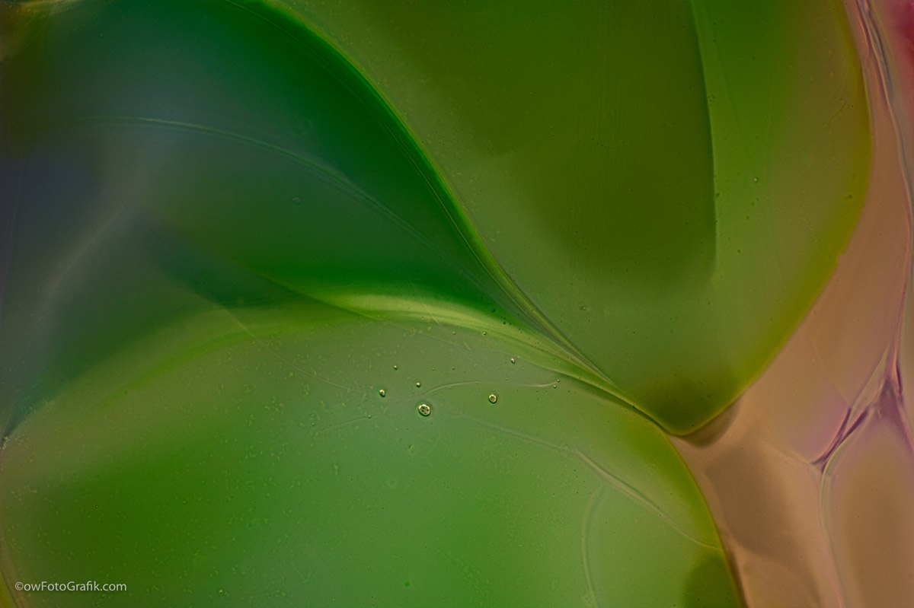
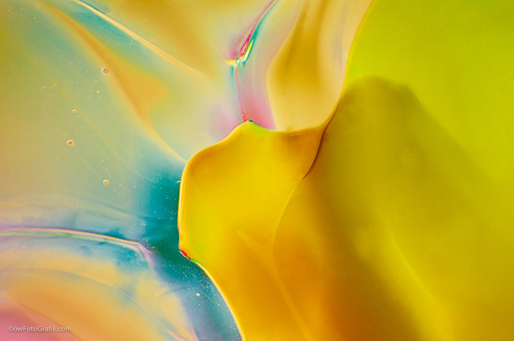
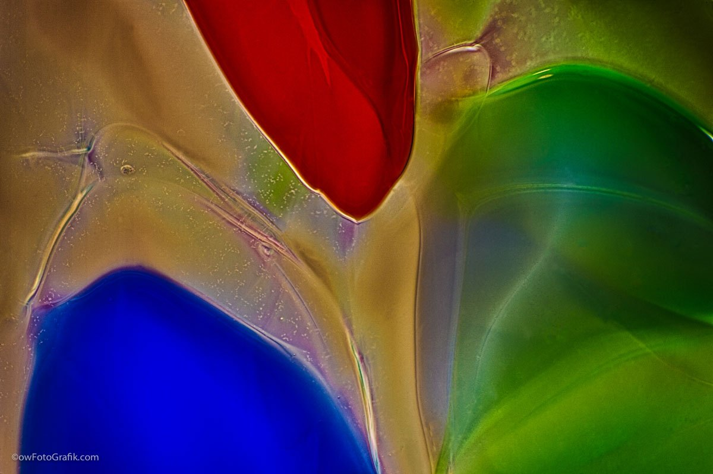
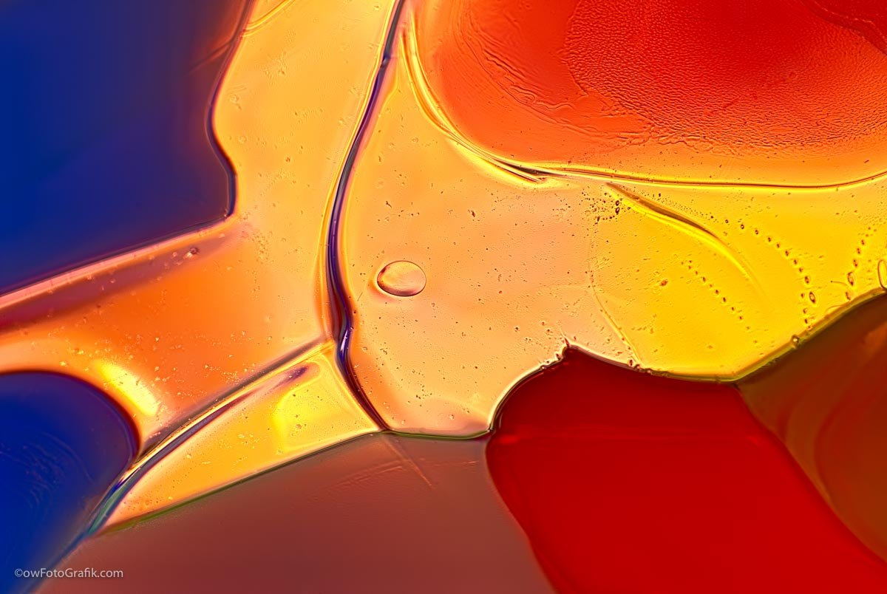
Interior Designs and Decor With Glass Art
Glass artwork is highly customized photography and as a result of the way it is created, this art form is endlessly customizable and can be incorporated into literally any type of interior design.
Each gallery of photos are created from one specific piece, or style of glass art and the pictured below represent two separate round glass ornaments and a tall glass vase. The color tones overall and how the glass was colored will both affect the end result of the photograph. Interestingly enough, how you change the angle of your lighting and whether or not you use natural light vs artificial light will affect the end products.
You can spend hours and hours in a glass art photo shoot, take hundreds, if not thousands of photographs and process them in a variety of ways. What this does is lend creativity and customization in every step. After you create these glass photographs, you can then use them in other mixed media designs.
As you can see, this wall art style works well with a variety of designs and rooms.
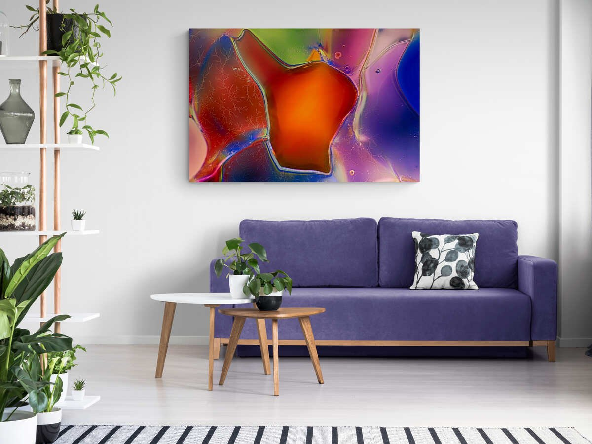
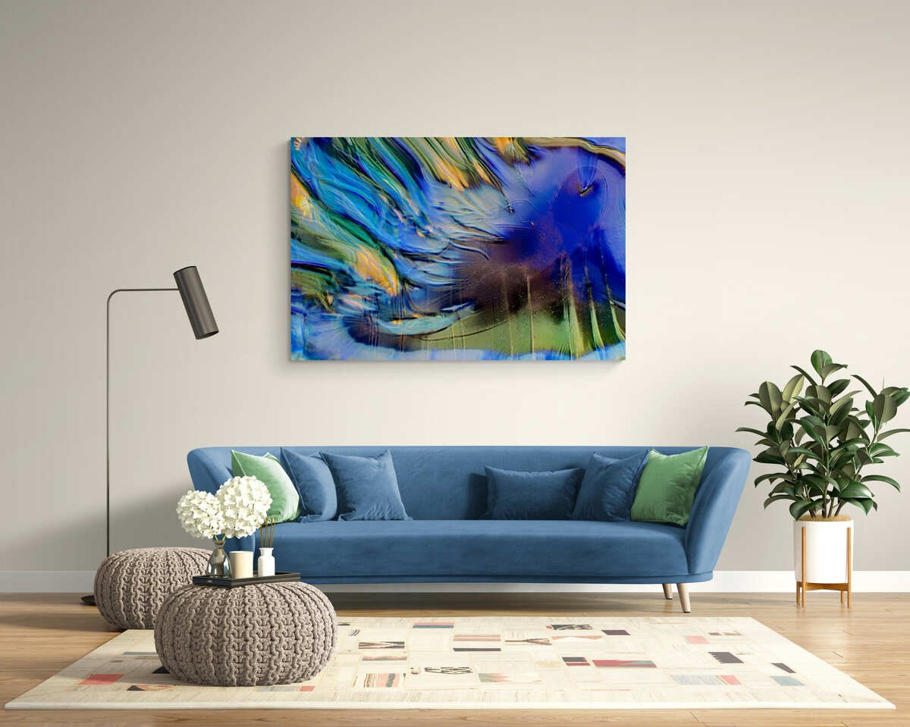
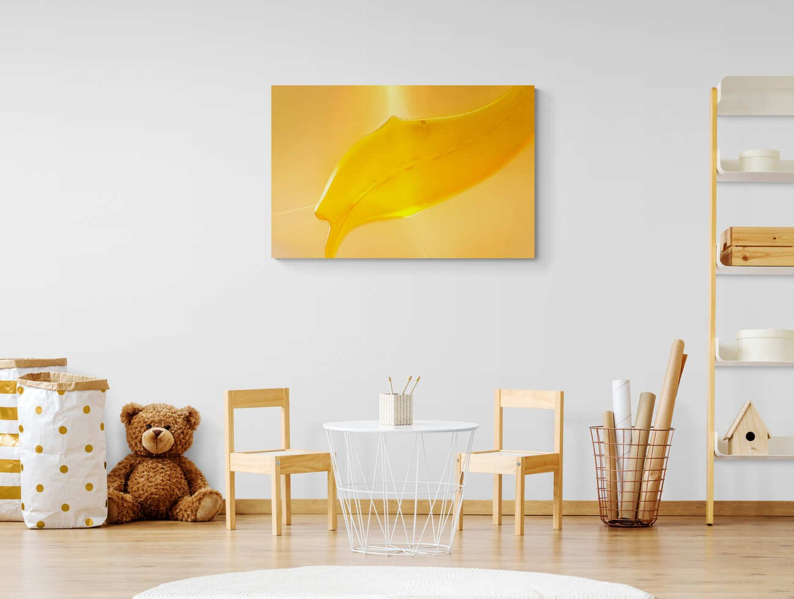
Behind The Scenes
In the beginning there were two loves. The love of Macro Photography and the love of Handblown Glass Art.
One cold winter day, these two came together and a new style of Macro Photography was born.
Watch the video to see exactly how these photos are taken.
This specific technique involves HDR or High Dynamic Range photography. It is a style that photographers use to capture multiple exposures with varying light for each photo.
After the series of photos is taken, I use Photoshop and/or Lightroom to apply an HDR filtering process that fuses the multiple exposures together. During this process I am adjusting the color ranges and saturation levels to mimic the natural light and how the subject looked when I took the photograph.
The final result is an abstract image that is rooted in the sands of time 😉
I am constantly fascinated by the variety of unique, colorful and intriguing images that come to life in front of us.
For interior design specifications, we can customize any of these images along any color range you need. The light can be reduce or enhanced and the color ranges can be modified to coordinate with any room design.
Reach out if you have any questions and/or just love glass art as much as I do!
Send Me an email
At the Hotel Rio Vista
The Hotel Rio Vista sits on the river in Winthrop, Washington, and my work hangs there. I photographed its rooms, and those photographs are on the hotel's own website.
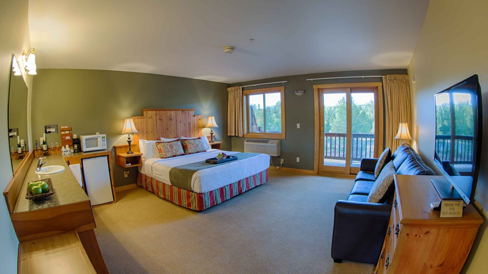
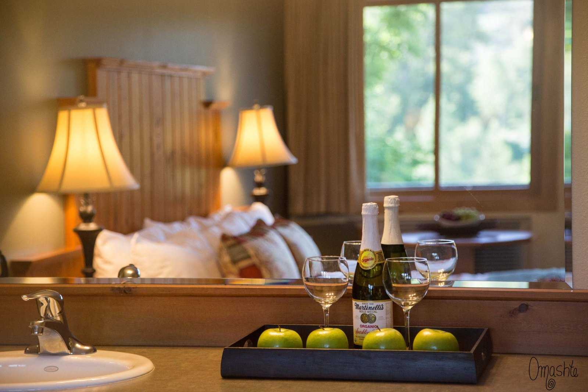
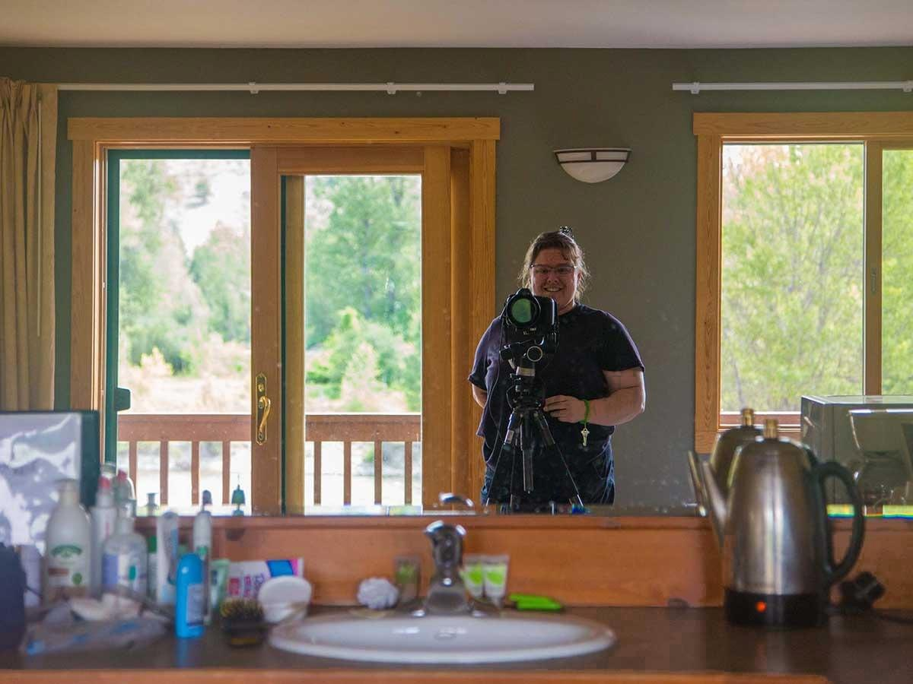
See the hotel and more of my photographs of it
Open the art adventure · Walk the Gallery · The Discount Club